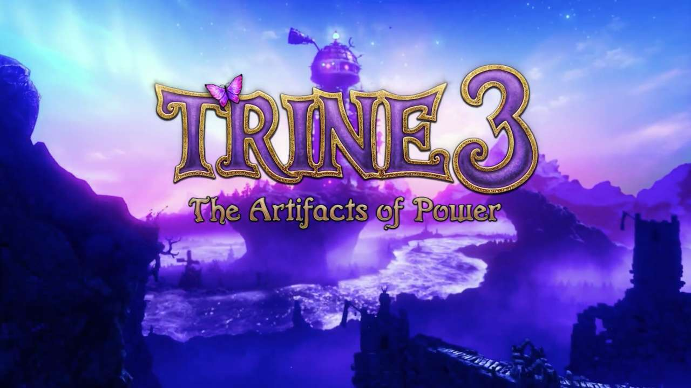
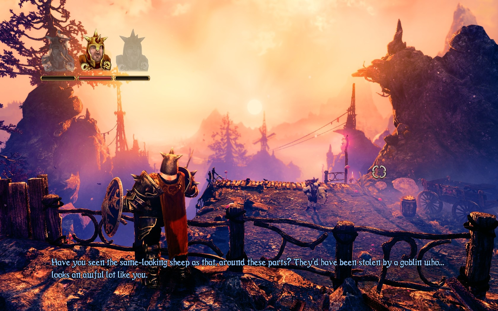
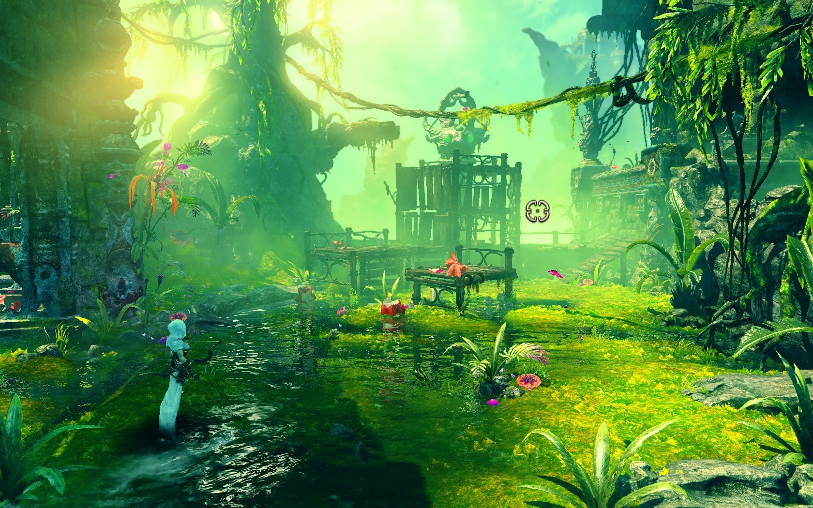

Din punctul de vedere al setărilor audio și al controlului, nu lipsește mai nimic. Există câte un slider pentru fiecare, incluzând unul și pentru Master Volume, cât și opțiune pentru căști. Controlul îți permite să creezi profiluri și să adaugi butoane adiționale pentru fiecare acțiune. Un mare plus aici.
POVESTEA
Povestea este la fel de amuzantă ca și până acum și nu cred că suportam o dezamăgire din acest punct de vedere.
În timp ce eroii noștri se bucură, fiecare în felul lui, de viața de zi cu zi - Pontius (the Brave) încercând să rezolve un caz complicat de furt de ovine, Zoya aflându-se în căutarea următoarei comori de furat, iar Amadeus relaxându-se în vacanță cu familia - Trine-ul revine în cele mai proaste momente și fără să pună întrebări, gata să-i conducă pe cei trei eroi spre cea mai nouă aventură.

Astral Academy, casa magilor de pretutindeni, este atacată de un monstru aparent imun la magie. Cei trei eroi pornesc la drum pregătiți să înfrunte pericolul pentru a salva situația. Reușind să facă acest lucru și să răpună bestia, cei 3 încearcă să renunțe la puterea oferită de Trine și să ducă vieți normale, făcând mai mult rău decât bine. Odată cu dorința de a fi eliberați de povară, aceștia descătuşează răul închis în Trine, iar acum trebuie să încerce să repare tot ceea ce au stricat.

GAMEPLAY
Din punctul de vedere al gameplay-ului, schimbarea majoră este că eroii nu mai au abilități speciale dintre care să alegi. Pe de o parte înțeleg acest lucru, vechile abilități fiind poate nepotrivite pentru Trine 3. Chiar dacă era distractiv să desenezi o cutie și să prinzi un goblin în ea, să arunci un ciocan și să dobori inamicii ca pe niște popice, să-i îngheți sau să le dai foc cu săgeți, poate că ar fi fost abilități prea puternice pentru acest titlu din serie. Problema este că, fiind obișnuit cu acestea și cu opțiunile parcă de RPG, lipsa totală m-a făcut să le duc dorul.

Un aspect foarte important din Trine pentru unii, mai puțin important pentru alții, absolut necesar pentru mine, este colectarea de secrete și experiență. TOATE! (în special în cazul meu). Trine 3 nu mai conține acele cufere cu imagini sau poeme încântătoare din Trine 2, putând să aduni doar experiența. În 3 ele se numesc Trineangles.
Cum am spus anterior, Trine 2, de exemplu, îți permitea să folosești experiența adunată pentru a debloca abilități speciale pentru fiecare dintre eroi, în Trine 3 lipsind acest sistem. În schimb, Trineangles sunt necesare pentru a debloca niveluri și a avansa în poveste, fiind necesare 900 de astfel de triunghiuri magice plutitoare pentru a juca ultimul nivel. Acestea sunt ascunse pe tot parcursul jocului, necesitând explorare și rezolvare de puzzle-uri, o privire ageră şi o minte ascuţită. În unele cazuri, sunt atât de bine ascunse, în timp ce în altele poţi să joci cu monitorul sau cu ochii închiși şi tot le vezi. Iarăși voi trata acest aspect cu înțelegere. Dacă ar fi fost ascunse prea bine, ar fi existat riscul să nu descoperi prea curând restul poveştii. Pe de altă parte, aspectul de puzzle presupune un nivel ceva mai mare de dificultate. În orice caz, nu o să mă plâng din acest punct de vedere.
GRAFICĂ
Seria Trine a impresionat din start cu stilul grafic, culorile vii, efecte, sunet și coloana sonoră. Trine 3: The Artifacts of Power nu face excepție. Cu un calculator destul de performant, grafica din Trine 3 îți va tăia respirația. Aceleași culori vii, același stil grafic, doar că acum arată mai bine ca oricând și, deși la bază aspectul 2D este încă prezent, încercarea celor de la Frozenbyte de a-l face 3D în întregime adaugă amploare jocului.

Din punctul de vedere al sunetului și coloanei sonore, Trine 3 iese din nou în evidență. De fapt, indiferent de noile elemente introduse cu fiecare joc, indiferent de complexitatea fiecărui joc, singurele constante au fost personajele, stilul grafic, calitatea sunetului și a coloanei sonore. Partea cea mai bună pentru final. Trine 3 include coloana sonoră gratuită odată cu achiziția, nu ca DLC sau upgrade la vreo versiune Deluxe sau Collector's Edition.
CONȚINUT ȘI DURATĂ
Și iată că am ajuns la motivul principal pentru existența comunicatului de la începutul articolului, conținutul și durata jocului.
Personal, am avut nevoie de 6 ore pentru a termina jocul și a aduna 971 / 1000 de Trineangles. Ce înseamnă acest lucru? Ei bine, dacă mai petrec maxim o oră să le adun pe cele rămase, în afară de co-op nu mai am mai nimic de făcut în joc. Excepții sunt Steam Workshop-ul și comunitatea, în cazul în care vor exista niveluri interesante create cu ajutorul editorului inclus în joc.
Aici a intervenit iar problema banilor. Inițial, conform lui Joel Kinnunen, povestea scrisă și numărul de niveluri erau mult mai mari, dar, din cauza problemelor financiare, aceasta nu a mai putut fi terminată la propriu.
Trine 3: The Artifacts of Power oferă 8 niveluri principale și 10 secundare. Acestea din urmă au doar câteva minute fiecare și, chiar dacă unele sunt distractive și amuzante, nu adaugă foarte mult din punctul de vedere al conținutului sau al poveștii.

Acum un mic spoiler. Povestea nu se termină cum ar trebui sau cum te-ai aștepta. Conform lui Joel, ideea nu a fost niciodată să termine astfel povestea și să se lanseze DLC-uri pentru a o continua și chiar a comunicat că nu există planuri pentru vreun DLC.
CONCLUZIE
Deși jocul nu se apropie nicidecum de succesul și amploarea celor două titluri anterioare, dacă ar fi să ne luăm după experiența din trecut, Frozenbyte va reuși fără doar și poate să rezolve problemele tehnice și poate să ofere vreo surpriză în ceea ce priveşte conținutul. Până atunci însă, Trine 3: The Artifacts of Power este, chiar și în situația de față, un joc bun, dar cu propriul set de probleme și dificultăți de depășit.